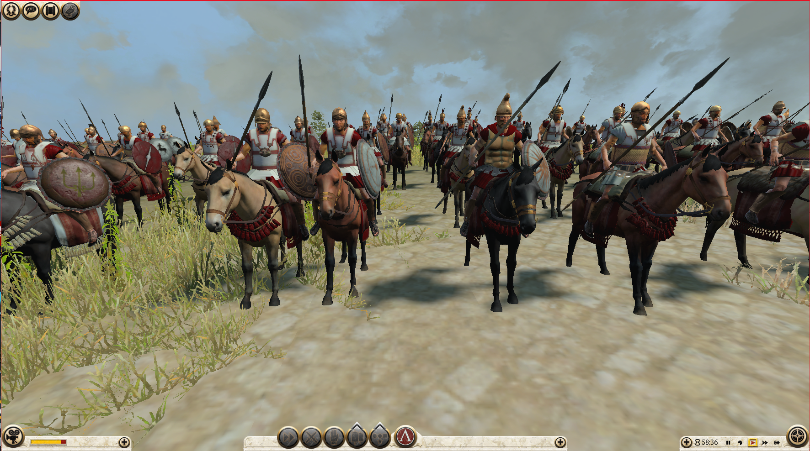
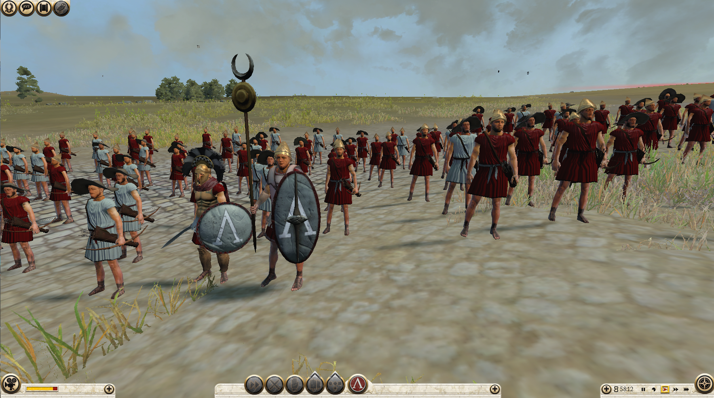

Charakterystyka
Sparta - chyba nikomu nie trzeba ich przedstawiać.
Mimo mniejszych przychodów z przemysłu i handlu , twoi Spartiaci werbowani z wyższym poziomem doświadczenia należą do
najtwardzszych jednostek w całej grze. Twoimi wrogami są Epiroci i Macedończycy na północy.
Jeśli uznasz, że brakuje ci złota nie wachaj się podbić Aten i samemu wybierać partnerów handlowych.
Polecane jednostki
Spartańscy hoplici


Wojowniczy hoplici gotowi zniszczyć każdego wroga Sparty. Lepsi odpowiednicy zwykłych hoplitów.
-
Zalety:
- Bardzo dobry pancerz i dyscyplina
- Dostępni na samym początku gry
- Szyk hoplitów
- Premia przeciwko jeździe
- Niska prędkość
Wady:
Falangici periojkowie


W miarę tani oddział falangi na usługach Sparty. Nie cechują się taką dyscypliną i umiejętnościami jak rodowici Spartanie, ale także sprawdzają się w walce.
-
Zalety:
- Dobry pancerz
- Szyk falangi
- Niski koszt werbunku i utrzymania
- Niska prędkość i mobilność
- Niskie statystyki ofensywne
- Słaba obrona w zwarciu (brak szyku)
- Wrażliwi na ostrzał i ataki z flanki i tyłu
Wady:
Spartańscy falangici


Spartanie w szyku falangi - wytrzymałość wojownika Sparty połączona z Sarissą. Znacznie lepsi niż periojkowie , są w stanie wytrzymać dłuższe bitwy zadając potworne straty szarżującemu wrogowi broniąc swego miasta.
-
Zalety:
- Dobry pancerz , dyscyplina i poziom zdrowia
- Szyk falangi
- Dobre statystyki ofensywne
- Niska prędkość i mobilność
- Niska obrona w zwarciu (brak szyku falangi)
- Wrażliwi na ostrzał i ataki z flanki i tyłu
- Całkiem duży koszt werbunku i utrzymania
Wady:
Królewscy Spartanie


Nalepsi z najlepszych. Ci Spartiaci są w stanie w połączeniu z falangą mocno napsuć krwi ciężkozbrojnym wrogom. Nie ma lepszych hoplitów niż oni.
-
Zalety:
- Świetny pancerz i dyscyplina
- Duży poziom zdrowia
- Dobre statystyki ofensywne
- Bardzo duża obrona w zwarciu
- Jednostka podnosi poziom morale pobliskich oddziałów
- Niska prędkość
- Duży koszt werbunku i utrzymania
Wady:
Jazda obywatelska

Jedyna kawaleria w spartańskim arsenale. Twój jedyny sposób na dopadnięcie jednostek szybszych od Spartan.
-
Zalety:
- Dobry pancerz i zdrowie
- Dostępni na samym początku gry
- Formacja klinu
- Duża prędkość
- Słabi w długiej walce wręcz
Wady:
Heloccy łucznicy

Niewolnicy Spartan zmuszeni walczyć łukami - "Bronią tchórzy" jak nazywali je Spartanie. Mimo swego nieszczęsnego statusu są w stanie zabijać wrogów z dystansu z relatywnie dobrą skutecznością --tutaj zarówno w otwartym polu jak i na miejskich murach.
-
Zalety:
- Niski koszt webunku i utrzymania
- Duże obrażenia od strzału
- Duża prędkość
- Oddział wolno się męczy
- Nieudolni walce wręcz
- Krótszy zasięg niż inni łucznicy
Wady: